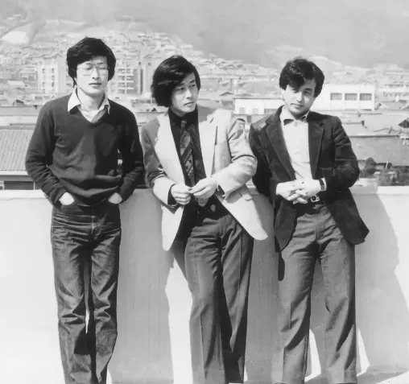

산울림의 초창기 앨범들은 그 시절 많은 앨범들이 그랬듯이 '아마추어리즘'이라는 한 단어로 설명할 수 있을 것 같습니다. 데뷔 당시 산울림은 연주가 능숙한 밴드는 아니었습니다. 박자는 흔들리고 연주는 투박합니다. 분명 서툴렀지만 어디서도 들어 본 적 없는 사운드와 귀에 쏙 들어오는 멜로디 위로 흐르는 아름다운 가사까지... 이런 스타일의 음악은 당시 국내 대중음악에서 좀처럼 찾아보기 어려운 것이었습니다.
〈아마 늦은 여름이었을 거야〉는 1977년 12월에 나온 산울림의 첫 앨범 《산울림 새노래 모음》의 수록곡으로 산울림의 대표곡 중 하나입니다. 둘째 김창훈이 후배 밴드 샌드페블즈에게 준 〈나 어떡해〉의 제1회 MBC 대학가요제 대상 수상에 고무된 김창완·창훈·창익 삼형제는 맏형 김창완이 취직하기 전에 기념 앨범을 만들기로 합니다. 김창완이 형제들의 연주를 담은 데모 테이프를 들고 서라벌레코드를 찾아갔고 그렇게 정식 앨범이 세상에 나오게 됩니다. 발매되자마자 〈아니 벌써〉가 공전의 히트를 기록하고 앨범은 단숨에 40만 장 이상의 판매고를 올리며 한국 대중음악사에 길이 남을 산울림 시대의 서막을 올립니다.
〈아니 벌써〉가 기존 가요의 문법을 무시하듯 "아니 벌써 해가 솟았나"라 외치며 말 그대로 '훅' 들어오는 가사를 8비트 록에 실었다면, 〈아마 늦은 여름이었을 거야〉는 어느 여름 그녀와 함께한 순간을 담은 서정적일 법한 가사를 범상치 않은 스타일로 전개합니다. 첫 소절 '꼭 그렇진 않았지만 구름 위에 뜬 기분이었어'는 그 어느 발라드보다 강렬하면서도 몽환적이며, 대중음악을 문학의 반열에 올리는 국내 가요사상 손꼽히는 가사 도입부가 아닐까 합니다. 보컬이 선창으로 메기면 악기가 추임새처럼 받아내는 농악을 연상시키는 편곡과 7/4박으로 변박하는 기타 아르페지오 브레이크는 지금 들어도 파격적입니다. 서정적인 포크와 트로트가 주류를 이루던 1970년대 중후반의 가요계를 감안한다면 신선하다 못해 충격적이기까지 합니다.
어떤 이들은 산울림 초기의 연주를 두고 신선하고 거침없는 상상력에 비해 연주력이 빈약하다며 아쉬워하기도 합니다. 하지만 이들의 연주가 원래 투박했던 건지, 애초에 매끈하게 다듬을 생각이 없었던 건지는 알 수 없습니다. 확실한 건 산울림의 음악이 그 어느 음악의 영향도 찾을 수 없을 만큼 독창성이 선명하며, 남의 음악을 흉내 내지 않고 처음 시작부터 오직 자신들만의 사운드를 세상에 꺼내 놓았다는 사실입니다.
아마 늦은 여름이었을 거야
산울림